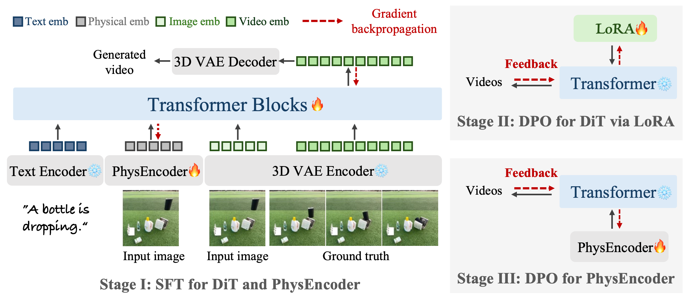

Abstract
Video generation models nowadays are capable of generating visually realistic videos, but often fail to adhere to physical laws, limiting their ability to generate physically plausible videos and serve as ''world models''. To address this issue, we propose PhysMaster, which captures physical knowledge as a representation for guiding video generation models to enhance their physics-awareness. Specifically, PhysMaster is based on the image-to-video task where the model is expected to predict physically plausible dynamics from the input image. Since the input image provides physical priors like relative positions and potential interactions of objects in the scenario, we devise PhysEncoder to encode physical information from it as an extra condition to inject physical knowledge into the video generation process. The lack of proper supervision on the model's physical performance beyond mere appearance motivates PhysEncoder to apply reinforcement learning with human feedback to physical representation learning, which leverages feedback from generation models to optimize physical representations with Direct Preference Optimization (DPO) in an end-to-end manner. PhysMaster provides a feasible solution for improving physics-awareness of PhysEncoder and thus of video generation, proving its ability on a simple proxy task and generalizability to wide-ranging physical scenarios. This implies that our PhysMaster, which unifies solutions for various physical processes via representation learning in the reinforcement learning paradigm, can act as a generic and plug-in solution for physics-aware video generation and broader applications.
 Click to jump to each section.
Click to jump to each section.
Three-stage Training Pipeline
We propose a three-stage training pipeline for PhysMaster to enable physical representation learning of PhysEncoder by leveraging the generative feedback from the video generation model. The core idea is formulating DPO for PhysEncoder Ep with the reward signal from generated videos of pretrained DiT model vθ , thus help physical knowledge learning.
- Stage I: SFT for DiT and PhysEncoder. First, we condition the I2V base model on physical representation from PhysEncoder by SFT, thus it can be possible for us to optimize PhysEncoder with the performance of model as feedback in following stages. As in Figure 1, by concatenating physical embeddings extracted by PhysEncoder with visual embeddings encoded by VAE, we inject physical representation as extra condition to the model.
- Stage II: DPO for DiT. Second, we expect to adapt the output of the pretrained model to a more physically plausible distribution, paving the way for the PhysEncoder to learn from generated videos with higher physical accuracy. Then in Stage II, we apply LoRA to finetune the DiT model on preference dataset with DPO, during which the model learns to generate positive samples with higher probability and negative samples with lower probability.
- Stage III: DPO for PhysEncoder. We leverage generative feedback from the pretrained DiT model to optimize PhysEncoder’s physical representation via DPO paradigm. With physical head of PhysEncoder the only trainable module, Stage III shares the same training objective with Stage II, differing solely in the learnable parameters. In this manner, by directing the DiT model to generate more accurate physical dynamics, the PhysEncoder’s original representation will be gradually optimized with more physical knowledge through model feedback.

Results of Proxy Task
Our work aims to provide a scalable and generalizable methodology for learning physics from targeted data, so for demonstrating the effectiveness of our PhysMaster,
we start by defining a proxy task ("free-fall") under simple physical principles and construct domain-specific data for preliminary validation.
We compare the physical accuracy of our model with existing works and ablate different training techniques of PhysEncoder.
-
Comparison.
We compare our model with PhysGen and PISA, which are both pecialized for rigid-body motion, on the real-world subset from PisaBench.
-
Ablation Study.
We report the qualitative results from different training stages on the same subset of PisaBench. "Base" denotes our base model,
and "Ours" represents our final model in Stage III.
Results of General Open-world Scenarios
-
Comparison.
We then verify the generalizability of PhysMaster across a broader range of physical laws and various tasks by
comparing with two types of video generation models: general models including CogVideoX-5B, Wan2.1-I2V-14B, and specialized physics-focused models represented by WISA.
-
Ablation Study.
We conduct ablation analysis to verify the effectiveness of our training pipeline on general open-world scenarios.
Conclusion
We propose PhysMaster, which learns physical representation from input image for guiding I2V model to generate physically plausible videos. We optimize physical encoder PhysEncoder based on generative feedback from a pretrained video generation model via DPO on both proxy task and general open-world scenarios, which proves to enhance the model's physical accuracy and demonstrate generalizability across various physical processes by injecting physical knowledge into generation, proving its potential to act as a generic solution for physics-aware video generation and broader applications.